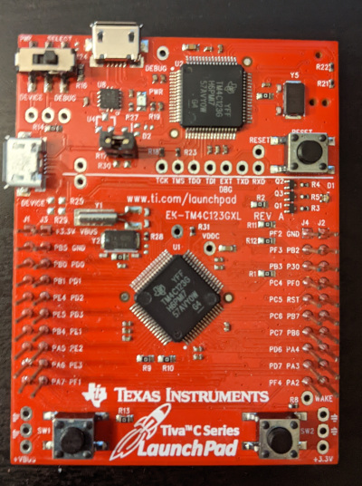

TM4C123G Tiva C LaunchPad
{kind=link}

The TM4C123G Tiva C Launchpad board.
The Tiva TM4C123G LaunchPad Evaluation Board is a low-cost evaluation platform for ARM Cortex-M4F-based microcontrollers from Texas Instruments.
On-Board GPIO Usage
PIN |
SIGNAL(S) |
LanchPad Function |
|---|---|---|
17 |
PA0/U0RX |
DEBUG/VCOM, Virtual COM port receive |
18 |
PA1/U0TX |
DEBUG/VCOM, Virtual COM port transmit |
19 |
PA2/SSIOCLK |
GPIO, J2 pin 10 |
20 |
PA3/SSIOFSS |
GPIO, J2 pin 9 |
21 |
PA4/SSIORX |
GPIO, J2 pin 8 |
22 |
PA5/SSIOTX |
GPIO, J1 pin 8 |
23 |
PA6/I2CLSCL |
GPIO, J1 pin 9 |
24 |
PA7/I2CLSDA |
GPIO, J1 pin 10 |
45 |
PB0/T2CCP0/U1Rx |
GPIO, J1 pin 3 |
46 |
PB1/T2CCP1/U1Tx |
GPIO, J1 pin 4 |
47 |
PB2/I2C0SCL/T3CCP0 |
GPIO, J2 pin 2 |
48 |
PB3/I2C0SDA/T3CCP1 |
GPIO, J4 pin 3 |
58 |
PB4/AIN10/CAN0Rx/SSI2CLK/T1CCP0 |
GPIO, J1 pin 7 |
57 |
PB5/AIN11/CAN0Tx/SSI2FSS/T1CCP1 |
GPIO, J1 pin 2 |
01 |
PB6/SSI2RX/T0CCP0 |
Connects to PD0 via resistor, GPIO, J2 pin 7 |
04 |
PB7/SSI2TX/T0CCP1 |
Connects to PD1 via resistor, GPIO, J2 pin 6 |
52 |
PC0/SWCLK/T4CCP0/TCK |
DEBUG/VCOM |
51 |
PC1/SWDIO/T4CCP1/TMS |
DEBUG/VCOM |
50 |
PC2/T5CCP0/TDI |
DEBUG/VCOM |
49 |
PC3/SWO/T5CCP1/TDO |
DEBUG/VCOM |
16 |
PC4/C1-/U1RTS/U1RX/U4RX/WT0CCP0 |
GPIO, J4 pin 4 |
15 |
PC5/C1+/U1CTS/U1TX/U4TX/WT0CCP1 |
GPIO, J4 pin 5 |
14 |
PC6/C0+/U3RX/WT1CCP0 |
GPIO, J4 pin 6 |
13 |
PC7/C0-/U3TX/WT1CCP1 |
GPIO, J4 pin 7 |
61 |
PD0/AIN7/I2C3SCL/SSI1CLK/SSI3CLKWT2CCP0 |
Connects to PB6 via resistor, GPIO, J3 pin 3 |
62 |
PD1/AIN6/I2C3SDA/SSI1Fss/SSI3Fss/WT2CCP1 |
Connects to PB7 via resistor, GPIO, J3 Pin 4 |
63 |
PD2/AIN5/SSI1RX/SSI3RX/WT3CCP0 |
GPIO, J3 pin 5 |
64 |
PD3/AIN4/SSI1TX/SSI3TX/WT3CCP1 |
GPIO, J3 pin 6 |
43 |
PD4/U6RX/USB0DM/WT4CCP0 |
USB_DM |
44 |
PD5/U6TX/USB0DP/WT4CCP1 |
USB_DP |
53 |
PD6/U2RX/WT5CCP0 |
GPIO, J4 pin 8 |
10 |
PD7/NMI/U2TX/WT5CCP1 |
+USB_VBUS, GPIO, J4 pin 9 Used for VBUS detection when configured as a self-powered USB Device |
09 |
PE0/AIN3/U7RX |
GPIO, J2 pin 3 |
08 |
PE1/AIN2/U7TX |
GPIO, J3 pin 7 |
07 |
PE2/AIN1 |
GPIO, J3 pin 8 |
06 |
PE3/AIN0 |
GPIO, J3 pin 9 |
59 |
PE4/AIN9/CAN0RX/I2C2SCL/U5RX |
GPIO, J1 pin 5 |
60 |
PE5/AIN8/CAN0TX/I2C2SDA/U5TX |
GPIO, J1 pin 6 |
28 |
PF0/C0O/CAN0RX/NMI/SSI1RX/T0CCP0/U1RTS |
USR_SW2 (Low when pressed), GPIO, J2 pin 4 |
29 |
PF1/C1O/SSI1TX/T0CCP1/TRD1/U1CTS |
LED_R, GPIO, J3 pin 10 |
30 |
PF2/SSI1CLK/T1CCP0/TRD0 |
LED_B, GPIO, J4 pin 1 |
31 |
PF3/CAN0TX/SSI1FSS/T1CCP1/TRCLK |
LED_G, GPIO, J4 pin 2 |
05 |
PF4/T2CCP0 |
USR_SW1 (Low when pressed), GPIO, J4 pin 10 |
AT24 Serial EEPROM
AT24 Connections
A AT24C512 Serial EEPPROM was used for tested I2C. There are no I2C devices on-board the Launchpad, but an external serial EEPROM module module was used.
The Serial EEPROM was mounted on an external adaptor board and connected to the LaunchPad thusly:
- VCC J1 pin 1 3.3V
J3 pin 1 5.0V
- GND J2 pin 1 GND
J3 pin 2 GND
PB2 J2 pin 2 SCL
PB3 J4 pin 3 SDA
Configuration Settings
The following configuration settings were used:
System Type -> Tiva/Stellaris Peripheral Support
CONFIG_TIVA_I2C0=y : Enable I2C
System Type -> I2C device driver options
TIVA_I2C_FREQUENCY=100000 : Select an I2C frequency
Device Drivers -> I2C Driver Support
CONFIG_I2C=y : Enable I2C support
Device Drivers -> Memory Technology Device (MTD) Support
CONFIG_MTD=y : Enable MTD support
CONFIG_MTD_AT24XX=y : Enable the AT24 driver
CONFIG_AT24XX_SIZE=512 : Specifies the AT 24C512 part
CONFIG_AT24XX_ADDR=0x53 : AT24 I2C address
File systems
CONFIG_NXFFS=y : Enables the NXFFS file system
CONFIG_NXFFS_PREALLOCATED=y : Required
: Other defaults are probably OK
Board Selection
CONFIG_TM4C123G_LAUNCHPAD_AT24_BLOCKMOUNT=y : Mounts AT24 for NSH
CONFIG_TM4C123G_LAUNCHPAD_AT24_NXFFS=y : Mount the AT24 using NXFFS
You can then format the AT24 EEPROM for a FAT file system and mount the file system at /mnt/at24 using these NSH commands:
nsh> mkfatfs /dev/mtdblock0
nsh> mount -t vfat /dev/mtdblock0 /mnt/at24
Then you an use the FLASH as a normal FAT file system:
nsh> echo "This is a test" >/mnt/at24/atest.txt
nsh> ls -l /mnt/at24
/mnt/at24:
-rw-rw-rw- 16 atest.txt
nsh> cat /mnt/at24/atest.txt
This is a test
Note
(2014-12-12) I was unsuccessful getting my AT24 module to work on the TM4C123G LaunchPad. I was unable to successuflly communication with the AT24 via I2C. I did verify I2C using the I2C tool and other I2C devices and I now believe that my AT24 module is not fully functional.
I2C Tool
NuttX supports an I2C tool at apps/system/i2c that can be used to peek and poke I2C devices. That tool can be enabled by setting the following:
System Type -> TIVA Peripheral Support
CONFIG_TIVA_I2C0=y : Enable I2C0
CONFIG_TIVA_I2C1=y : Enable I2C1
CONFIG_TIVA_I2C2=y : Enable I2C2
...
System Type -> I2C device driver options
CONFIG_TIVA_I2C0_FREQUENCY=100000 : Select an I2C0 frequency
CONFIG_TIVA_I2C1_FREQUENCY=100000 : Select an I2C1 frequency
CONFIG_TIVA_I2C2_FREQUENCY=100000 : Select an I2C2 frequency
...
Device Drivers -> I2C Driver Support
CONFIG_I2C=y : Enable I2C support
Application Configuration -> NSH Library
CONFIG_SYSTEM_I2CTOOL=y : Enable the I2C tool
CONFIG_I2CTOOL_MINBUS=0 : I2C0 has the minimum bus number 0
CONFIG_I2CTOOL_MAXBUS=2 : I2C2 has the maximum bus number 2
CONFIG_I2CTOOL_DEFFREQ=100000 : Pick a consistent frequency
More information about I2C
Using OpenOCD and GDB with an FT2232 JTAG emulator
Building OpenOCD under Cygwin:
Refer to Documentation/platforms/arm/lpc17xx/boards/olimex-lpc1766stk/README.txt
Installing OpenOCD in Linux:
sudo apt-get install openocd
As of this writing, there is no support for the tm4c123g in the package above. You will have to build openocd from its source (as of this writing the latest commit was b9b4bd1a6410ff1b2885d9c2abe16a4ae7cb885f):
git clone http://git.code.sf.net/p/openocd/code openocd
cd openocd
Then, add the patches provided by http://openocd.zylin.com/922:
git fetch http://openocd.zylin.com/openocd refs/changes/22/922/14 && git checkout FETCH_HEAD
./bootstrap
./configure --enable-maintainer-mode --enable-ti-icdi
make
sudo make install
For additional help, see http://processors.wiki.ti.com/index.php/Tiva_Launchpad_with_OpenOCD_and_Linux
Helper Scripts.
I have been using the on-board In-Circuit Debug Interface (ICDI) interface. OpenOCD requires a configuration file. I keep the one I used last here:
boards/arm/tiva/tm4c123g-launchpad/tools/tm4c123g-launchpad.cfg
However, the “correct” configuration script to use with OpenOCD may change as the features of OpenOCD evolve. So you should at least compare that tm4c123g-launchpad.cfg file with configuration files in /usr/share/openocd/scripts. As of this writing, the configuration files of interest were:
/usr/local/share/openocd/scripts/board/ek-tm4c123gxl.cfg
/usr/local/share/openocd/scripts/interface/ti-icdi.cfg
/usr/local/share/openocd/scripts/target/stellaris_icdi.cfg
There is also a script on the tools/ directory that I use to start the OpenOCD daemon on my system called oocd.sh. That script will probably require some modifications to work in another environment:
Possibly the value of OPENOCD_PATH and TARGET_PATH
It assumes that the correct script to use is the one at boards/arm/tiva/tm4c123g-launchpad/tools/tm4c123g-launchpad.cfg
Starting OpenOCD
If you are in the top-level NuttX build directlory then you should be able to start the OpenOCD daemon like:
oocd.sh $PWD
The relative path to the oocd.sh script is:
boards/arm/tiva/tm4c123g-launchpad/tools.
You may want to add that path to your PATH variable.
Note that OpenOCD needs to be run with administrator privileges in some environments (sudo).
Connecting GDB
Once the OpenOCD daemon has been started, you can connect to it via GDB using the following GDB command:
arm-nuttx-elf-gdb
(gdb) target remote localhost:3333
NOTE: The name of your GDB program may differ. For example, with the CodeSourcery toolchain, the ARM GDB would be called arm-none-eabi-gdb.
After starting GDB, you can load the NuttX ELF file:
(gdb) symbol-file nuttx
(gdb) monitor reset
(gdb) monitor halt
(gdb) load nuttx
NOTES:
Loading the symbol-file is only useful if you have built NuttX to include debug symbols (by setting CONFIG_DEBUG_SYMBOLS=y in the .config file).
The MCU must be halted prior to loading code using ‘mon reset’ as described below.
OpenOCD will support several special ‘monitor’ commands. These GDB commands will send comments to the OpenOCD monitor. Here are a couple that you will need to use:
(gdb) monitor reset
(gdb) monitor halt
NOTES:
The MCU must be halted using ‘mon halt’ prior to loading code.
Reset will restart the processor after loading code.
The ‘monitor’ command can be abbreviated as just ‘mon’.
LEDs
The TM4C123G has a single RGB LED. If CONFIG_ARCH_LEDS is defined, then support for the LaunchPad LEDs will be included in the build. See:
boards/arm/tiva/tm4c123g-launchpad/include/board.h - Defines LED constants, types and prototypes the LED interface functions.
boards/arm/tiva/tm4c123g-launchpad/src/tm4c123g-launchpad.h - GPIO settings for the LEDs.
boards/arm/tiva/tm4c123g-launchpad/src/up_leds.c - LED control logic.
- OFF:
OFF means that the OS is still initializing. Initialization is very fast so if you see this at all, it probably means that the system is hanging up somewhere in the initialization phases.
- GREEN or GREEN-ish
This means that the OS completed initialization.
- Bluish:
Whenever and interrupt or signal handler is entered, the BLUE LED is illuminated and extinguished when the interrupt or signal handler exits. This will add a BLUE-ish tinge to the LED.
- Redish:
If a recovered assertion occurs, the RED component will be illuminated briefly while the assertion is handled. You will probably never see this.
- Flashing RED:
In the event of a fatal crash, the BLUE and GREEN components will be extinguished and the RED component will FLASH at a 2Hz rate.
Serial Console
By default, all configurations use UART0 which connects to the USB VCOM on the DEBUG port on the TM4C123G LaunchPad:
UART0 RX - PA.0
UART0 TX - PA.1
However, if you use an external RS232 driver, then other options are available. UART1 has option pin settings and flow control capabilities that are not available with the other UARTS:
UART1 RX - PB.0 or PC.4 (Need disambiguation in board.h)
UART1 TX - PB.1 or PC.5 (" " " " "" " ")
UART1_RTS - PF.0 or PC.4
UART1_CTS - PF.1 or PC.5
NOTE: board.h currently selects PB.0, PB.1, PF.0 and PF.1 for UART1, but that can be changed by editing board.h
UART2-5, 7 are also available, UART2 is not recommended because it shares some pin usage with USB device mode. UART6 is not available because its only RX/TX pin options are dedicated to USB support.:
UART2 RX - PD.6
UART2 TX - PD.7 (Also used for USB VBUS detection)
UART3 RX - PC.6
UART3 TX - PC.7
UART4 RX - PC.4
UART4 TX - PC.5
UART5 RX - PE.4
UART5 TX - PE.5
UART6 RX - PD.4, Not available. Dedicated for USB_DM
UART6 TX - PD.5, Not available. Dedicated for USB_DP
UART7 RX - PE.0
UART7 TX - PE.1
USB Device Controller Functions
Device Overview
An FT2232 device from Future Technology Devices International Ltd manages USB-to-serial conversion. The FT2232 is factory configured by Luminary Micro to implement a JTAG/SWD port (synchronous serial) on channel A and a Virtual COM Port (VCP) on channel B. This feature allows two simultaneous communications links between the host computer and the target device using a single USB cable. Separate Windows drivers for each function are provided on the Documentation and Software CD.
Debugging with JTAG/SWD
The FT2232 USB device performs JTAG/SWD serial operations under the control of the debugger or the Luminary Flash Programmer. It also operate as an In-Circuit Debugger Interface (ICDI), allowing debugging of any external target board. Debugging modes:
MODE
DEBUG FUNCTION
USE
SELECTED BY
1
Internal ICDI
Debug on-board TM4C123G microcontroller over USB interface.
Default Mode
2
ICDI out to JTAG/SWD header
The EVB is used as a USB to SWD/JTAG interface to an external target.
Connecting to an external target and starting debug software. The red Debug Out LED will be ON.
3
In from JTAG/SWD header
For users who prefer an external debug interface (ULINK, JLINK, etc.) with the EVB.
Connecting an external debugger to the JTAG/SWD header.
Virtual COM Port
The Virtual COM Port (VCP) allows Windows applications (such as HyperTerminal) to communicate with UART0 on the TM4C123G over USB. Once the FT2232 VCP driver is installed, Windows assigns a COM port number to the VCP channel.
MCP2515 - SPI - CAN
I like CANbus, and having an MCP2515 CAN Bus Module laying around gave me the idea to implement it on the TM4C123GXL (Launchpad). NuttX already had implemented it on the STM32. So a lot of work already has been done. It uses SPI and with this Launchpad we use SSI.
Here is how I have the MCP2515 Module connected. But you can change this with the settings in include/board.h and src/tm4c123g-launchpad.h.
Connector pinout that I am using:
Connector CAN Module |
Launchpad TM4C123GXL (SSI2_1) |
|---|---|
1 INT |
PB0 |
2 SCK |
PB4 (Clock) |
3 SI |
PB7 (MOSI = TX) |
4 SO |
PB6 (MISO = RX) |
5 CS |
PB5 (Chip Select) |
6 GND |
GND |
7 VCC |
VBUS (+5V) |
PS: I have to test the CS signal when adding it on a bus with multiple nodes.
TM4C123G LaunchPad Configuration Options
CONFIG_TIVA_SSI0 - Select to enable support for SSI0
CONFIG_TIVA_SSI1 - Select to enable support for SSI1
CONFIG_SSI_POLLWAIT - Select to disable interrupt driven SSI support. Poll-waiting is recommended if the interrupt rate would be to high in the interrupt driven case.
CONFIG_SSI_TXLIMIT - Write this many words to the Tx FIFO before emptying the Rx FIFO. If the SPI frequency is high and this value is large, then larger values of this setting may cause Rx FIFO overrun errors. Default: half of the Tx FIFO size (4).
CONFIG_TIVA_ETHERNET - This must be set (along with CONFIG_NET) to build the Tiva Ethernet driver
CONFIG_TIVA_ETHLEDS - Enable to use Ethernet LEDs on the board.
CONFIG_TIVA_BOARDMAC - If the board-specific logic can provide a MAC address (via tiva_ethernetmac()), then this should be selected.
CONFIG_TIVA_ETHHDUPLEX - Set to force half duplex operation
CONFIG_TIVA_ETHNOAUTOCRC - Set to suppress auto-CRC generation
CONFIG_TIVA_ETHNOPAD - Set to suppress Tx padding
CONFIG_TIVA_MULTICAST - Set to enable multicast frames
CONFIG_TIVA_PROMISCUOUS - Set to enable promiscuous mode
CONFIG_TIVA_BADCRC - Set to enable bad CRC rejection.
CONFIG_TIVA_DUMPPACKET - Dump each packet received/sent to the console.
Configurations
Each TM4C123G LaunchPad configuration is maintained in a sub-directory of boards/arm/tiva/tm4c123g-launchpad/configs/ and can be selected as follows:
tools/configure.sh tm4c123g-launchpad:<subdir>
Where <subdir> is one of the following:
mcp2515
Configuration uses the MCP2515 SPI CAN part. See the section entitled “MCP2515 - SPI - CAN” above.
nsh
Configures the NuttShell (nsh) located at apps/examples/nsh. The configuration enables the serial VCOM interfaces on UART0. Support for builtin applications is enabled, but in the base configuration no builtin applications are selected.
NOTES:
This configuration uses the mconf-based configuration tool. To change this configuration using that tool, you should:
Build and install the kconfig-mconf tool. See nuttx/README.txt see additional README.txt files in the NuttX tools repository.
Execute ‘make menuconfig’ in nuttx/ in order to start the reconfiguration process.
By default, this configuration uses the ARM EABI toolchain for Windows and builds under Cygwin (or probably MSYS). That can easily be reconfigured, of course.
CONFIG_HOST_LINUX=y : Linux (Cygwin under Windows okay too).
CONFIG_ARM_TOOLCHAIN_BUILDROOT=y : Buildroot (arm-nuttx-elf-gcc)
CONFIG_RAW_BINARY=y : Output formats: ELF and raw binary